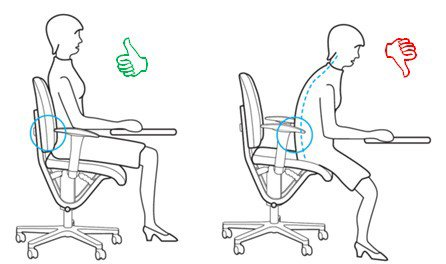
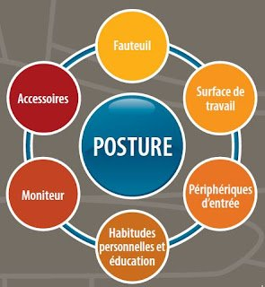

![[ANA JDG] Asterix and the Great Rescue - Megadrive](../vi/6oUXi0ckLmA/default.jpg)
![[ Présentation pour la chaîne Grenier des Joueurs ] JDG Prod](../art/SHAR.6419.583.2.jpg)


Rester assis sur une chaise de bureau pendant des heures n'est pas une chose naturelle.
Afin d'éviter de vous déformer et faire partie des gens souffrant de douleurs dorsales ( arthrose , fractures par tassement vertébral, rupture ou hernie discale, ... ) voici comment les quelques points à prendre en compte lors du choix du fauteuil de bureau ( oui, on peut dire un "fauteuil" au lieu d'une "chaise") :

Soutien lombaire
Vous voyez la partie bombé en bas du dossier ? C'est pour le bas du dos !
Hauteur réglable
Toujours avoir les pieds sur le sol à plat et les jambes pliées à 90°. C'est une position vous donnant des appuies tout en étant une position de repos.
Largeur adaptée
Si vous déborder du siège, vous allez avoir mal au popotin.
Dossier réglable
Il faut que votre dos soit totalement sur le siège en position de repos (enfoncé dans le siège).
Profondeur du siège ajustable ou réglable
Il faut que vous puissiez avoir le siège dans le creux de vos jambes, idéalement.
Appuie-bras amovibles ou réglables
Les repose-bras sont importants pour reposer les bras... je ne vous apprend rien. Ils doivent être à la hauteur du bassin.
Muni de 5 pattes
Avec ou sans roulette, c'est tout de même une garantit d'équilibre.
Tissu qui respire ou perméable à l'air
Le vieux cuir ou caoutchouc qui brule quand il y a la canicule ? JAMAIS !
Bien ajusté petit, moyen ou grand
Évidemment.
Supplément d'information : La surface de travail
Il y a 3 niveaux de surface du plus éloigné de vous jusqu'au plus près :
1. La surface hors de l'aire de travail ( accessible seulement à bout de bras )
2. La surface de travail occasionnel ( accessible à partir de vos avant-bras )
3. La surface de travail habituel ( accessible sans difficulté )
Gardez donc en tête que l'essentiel doit être à porté de main, la posture doit être confortable et on limite les rotations.

Sources et informations supplémentaires :
Partage